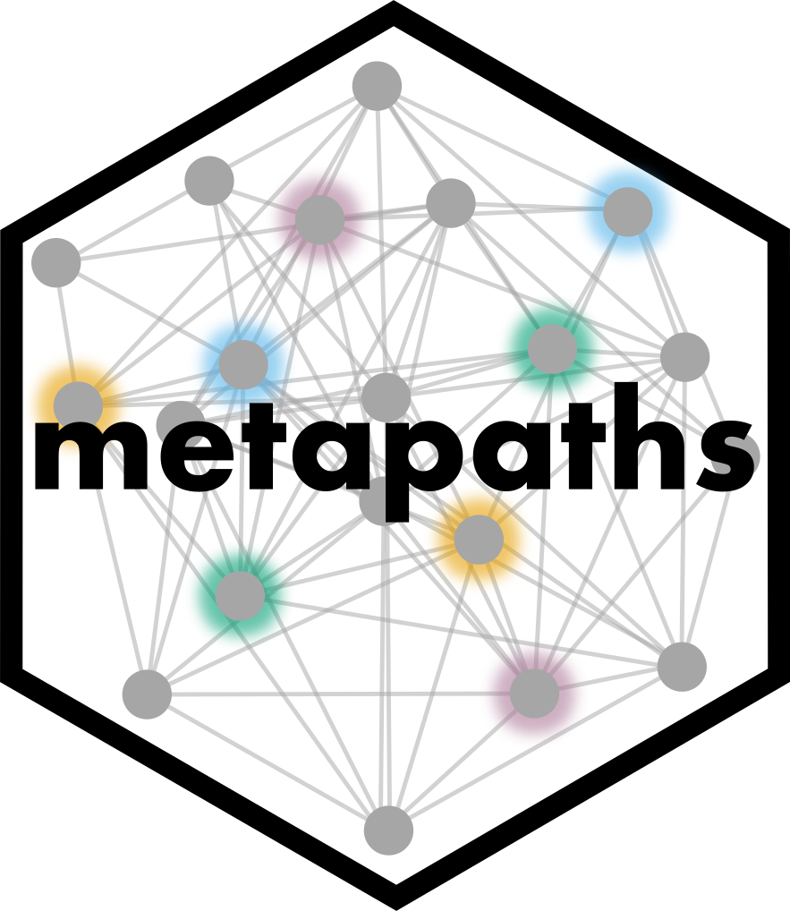

metapaths: Meta-Path-Based Network Similarity Search in
KGs

Large-scale heterogeneous biomedical knowledge graphs (KGs) use graph structures to represent and study multi-typed relational information in biological systems. Network relationships in a KG can be quantified by similarity search methods; however, such methods must consider the diversity of node types contained within that KG. To distinguish between node types, we leverage meta paths, a general graph-theoretic approach for flexible similarity search in large networks. Meta paths are defined as sequences of node types which define a walk from the origin node to the destination node, and are widely used in biomedical network analysis.
To support meta paths in R, we present metapaths, the
first R software package to perform meta path-based similarity search in
heterogeneous KGs. The metapaths package offers various
in-built similarity metrics for node pair comparison by querying KGs
represented as either edge or adjacency lists, as well as auxiliary
aggregation methods to measure set-level relationships. This framework
facilitates the scalable and flexible modeling of network similarities
in KGs with applications across biomedical KG learning.
Installation
metapaths is designed for the R programming language and
statistical computing environment. To install the latest version of this
package, please run the following line in your R console:
devtools::install_github("ayushnoori/metapaths")Custom Similarity Metrics
In addition to the in-built similarity metrics, users may also define their own custom metrics. To define a custom similarity metric, please complete the following steps:
Add a new function to
similarity-metrics.Rwith theget_<similarity-metric>()nomenclature.Edit the
get_similarity_function()function to add your metric to the list of allowed similarity metrics.Submit a pull request for approval.
Custom Aggregation Methods
Akin to custom similarity metrics, users may also define custom aggregation methods for set-level comparison. To define a custom aggregation method, please complete the following steps:
Add a new function to
aggregation-methods.Rwith theget_<aggregation-method>()nomenclature.Edit the
get_aggregation_function()function to add your metric to the list of allowed aggregation methods.Submit a pull request for approval.
Evaluation on a Biomedical KG
Evaluation of the metapaths package on
ogbl-biokg, an open-source biomedical KG available from the
Open Graph Benchmark, recovered
meaningful drug and disease-associated relationships as quantified by
high similarity scores. For example, the meta path traversal function
identified three paths following the specified meta path that connect
donepezil – a drug used to treat Alzheimer’s disease (AD) – with the
regulation of amyloid fibril formation pathway, which is implicated in
AD.

Additional usage examples are available in the ogbl-biokg
vignette.
Documentation
- The
metapathsR package is freely available under MPL 2.0 via GitHub. - Package documentation and usage examples are available here.
- For more information, please visit the
metapathsproject website.
Citation
If you find metapaths useful, please cite our
forthcoming paper:
@article{noori2022metapaths,
title={metapaths: similarity search in heterogeneous knowledge graphs via meta paths},
author={Noori, Ayush and Tan, Amelia L.M. and Li, Michelle M. and Zitnik, Marinka},
journal={arXiv: 2209.0000},
volume={},
number={},
pages={},
year={2022},
publisher={}
}Contact
Should any questions arise, please open a GitHub issue or contact anoori@college.harvard.edu.